Context, skills, prompts and limits. How to give an AI a workspace it can act in, and how to keep it honest. Newest first.
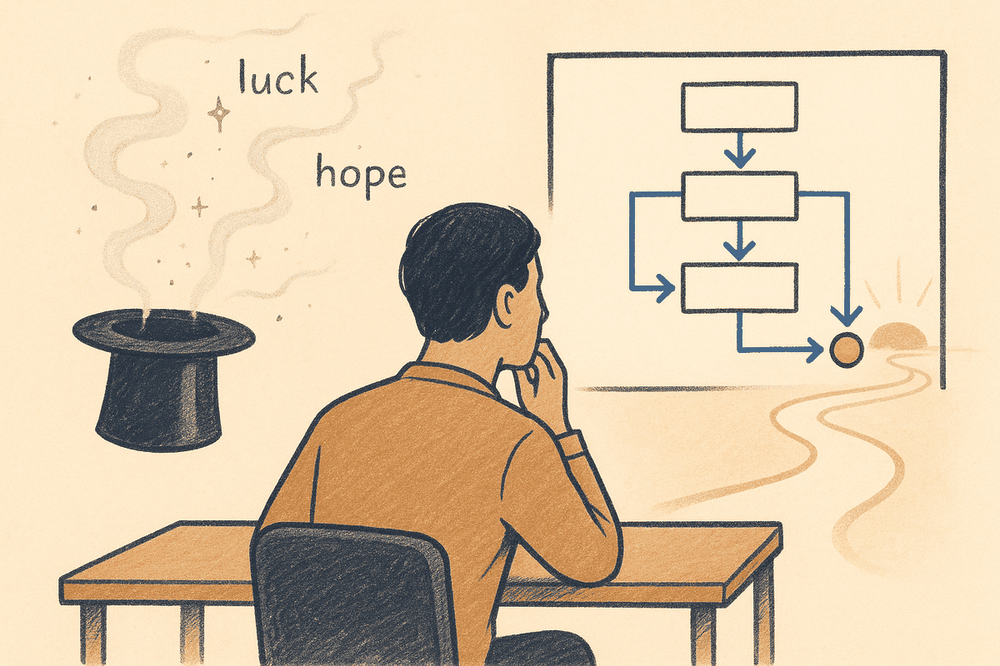
For knowledge workersEverything built into a vault to serve a human — self-describing folders, explicit links, per-type schemas — turns out to be exactly what makes it legible to a machine. You do not build an AI-ready vault; you build a well-structured one.
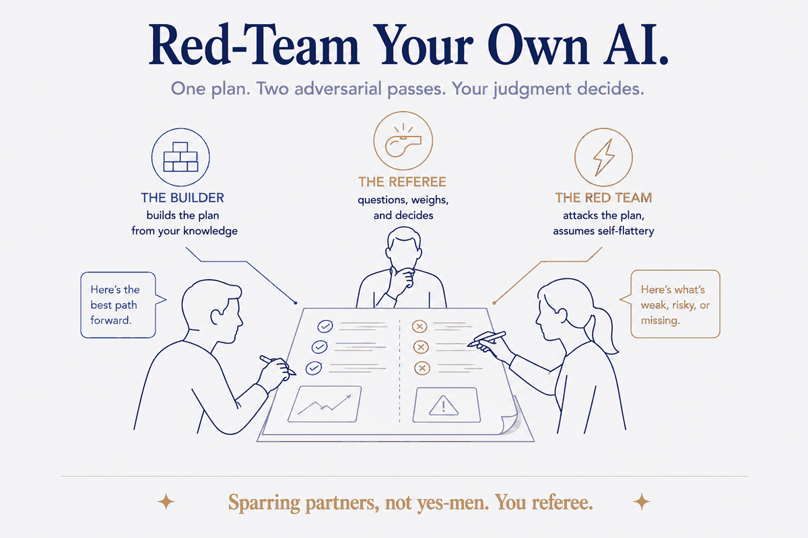
Structure Beats MagicAsk an AI to review your own material and it hands back something flattering. Point a second one at it with orders to attack, and you find what the first was too polite to mention.
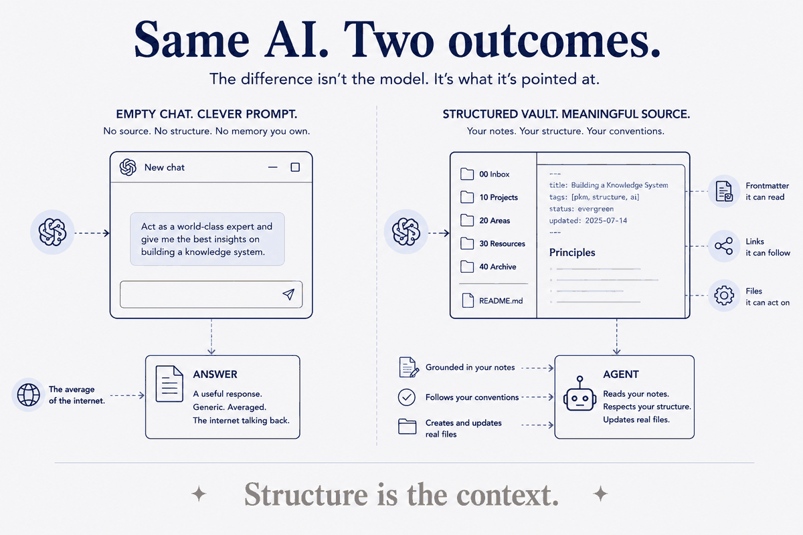
For knowledge workersEveryone's tuning prompts. The work isn't in the prompt. It's in whether the thing you point the AI at is structured enough for it to act, not just answer.
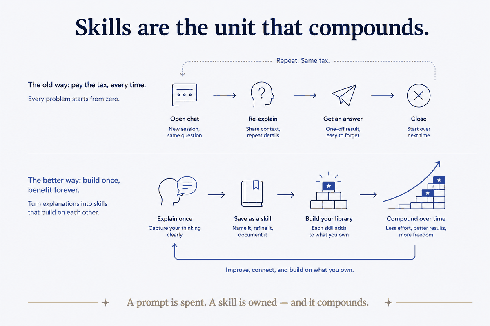
For builders & teamsEvery time you open a fresh chat and re-explain how you like things done, you're paying the same tax twice. I stopped — by turning the explanations into skills. I now have 82 of them, and they're the reason the AI gets more useful every month instead of resetting to zero.
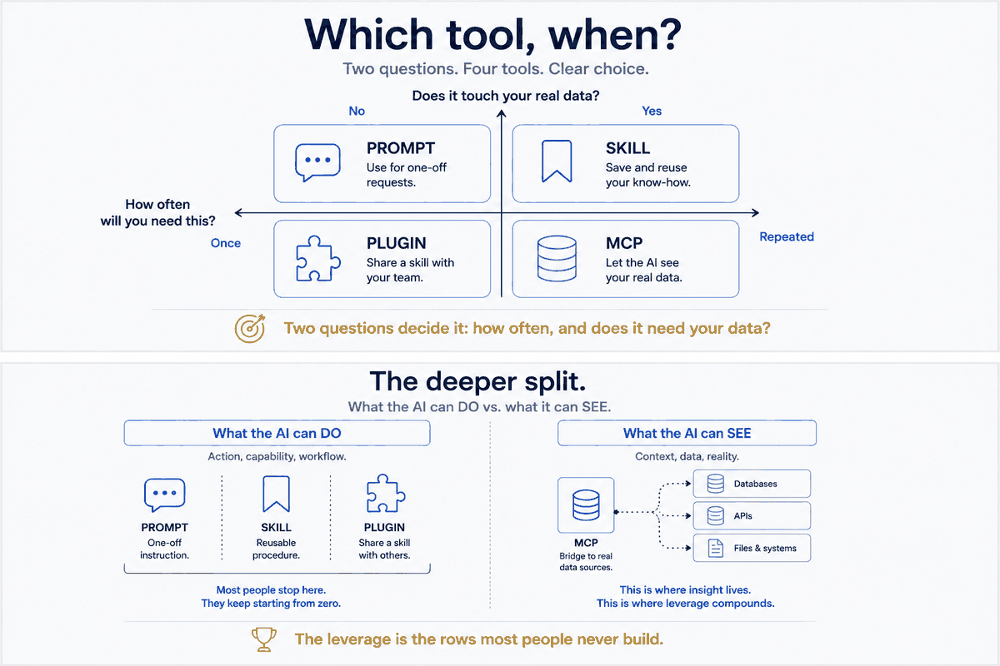
For builders & teamsBy now you know what a skill is and how to build one. But a skill is one option among four, and reaching for the wrong one is how people either overbuild a one-off or underbuild something they'll repeat forever. Here's how I actually decide.
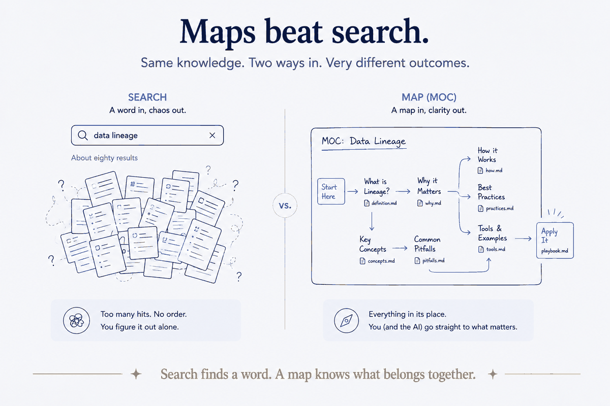
For knowledge workersWhen your vault is small, you search. When it's large, search starts failing you — and it fails the AI too. The fix is older than search: a map. A hand-made Map of Content isn't just navigation for humans. It turns out to be the single best thing you can hand an AI to make it find the right notes instead of guessing.
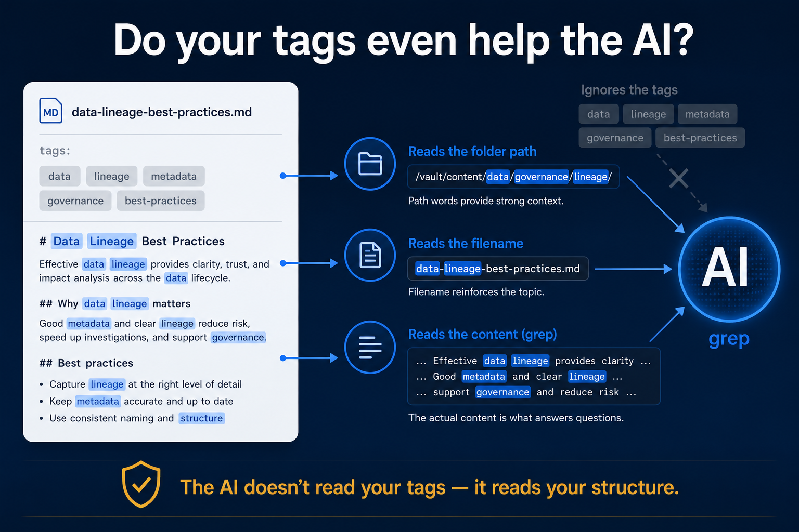
For builders & teamsEveryone tags their notes. I assumed it made my AI assistant faster at finding things. Then I actually measured it across ~17,000 files — and found that for the AI, the tags were mostly doing nothing the structure wasn't already doing.
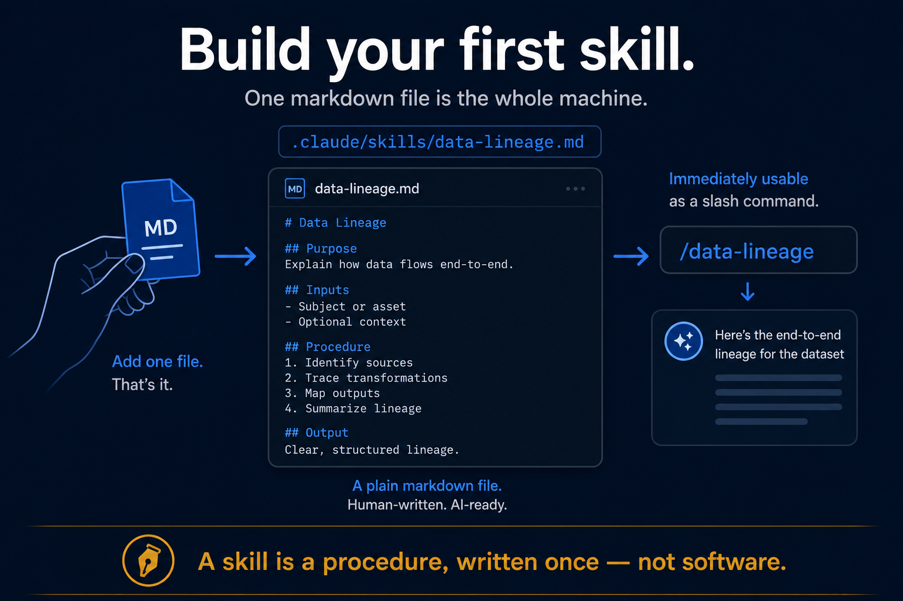
For builders & teamsSkills are the unit that compounds — so this is the part where I hand you the recipe: the actual anatomy of a working skill, so you can build one today. I'll show you a real one from my own system, line by line.
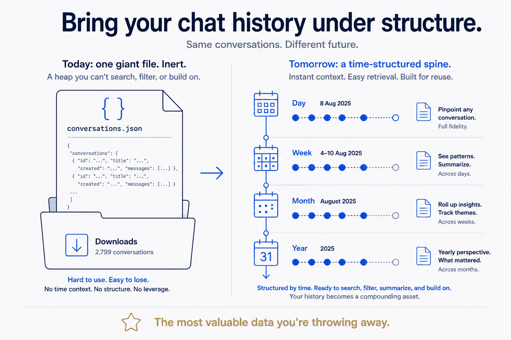
For knowledge workersYou've had thousands of conversations with AI. They're sitting in an export file you'll never open. I take the messiest pile I own — 2,799 ChatGPT conversations and every Claude thread — and route them onto my calendar so they stop being a graveyard and start being a timeline that summarizes itself.
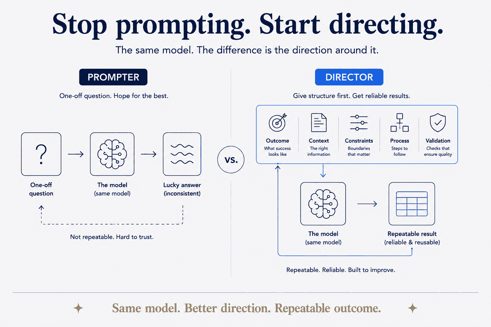
For knowledge workersI read 120 'AI tips' infographics so you don't have to. The good ones all say the same thing — and it isn't a prompt trick.
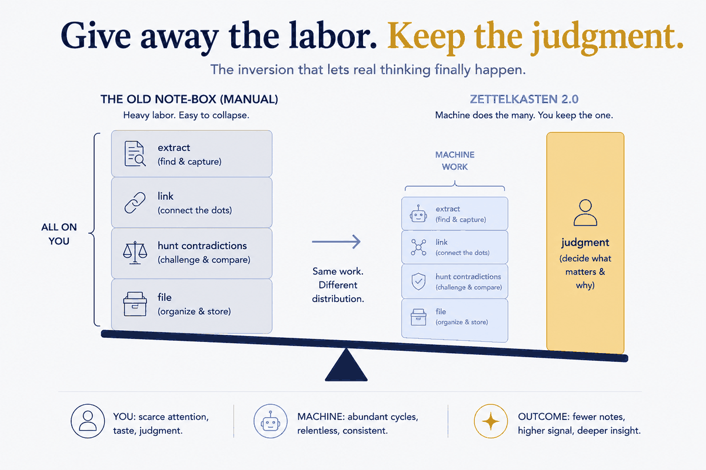
For knowledge workersManual Zettelkasten died of one disease — labor. The AI age cures exactly that disease, if you keep the one job only you can do.
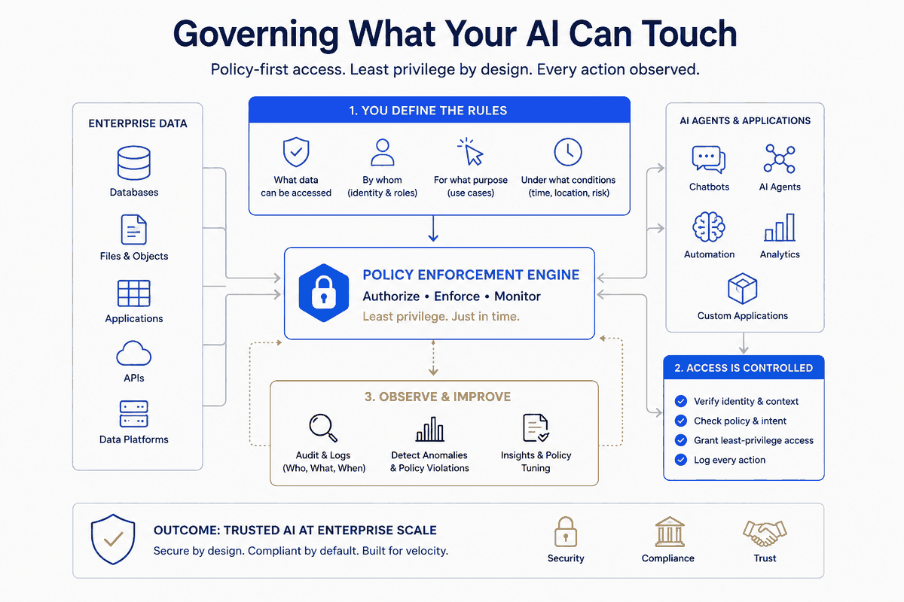
For builders & teamsAn agent with access to your whole machine is a power tool with no guard. Here's how I put the guard back — permissions, an SSRF you didn't know you had, and one rule that keeps the guard from becoming the problem.